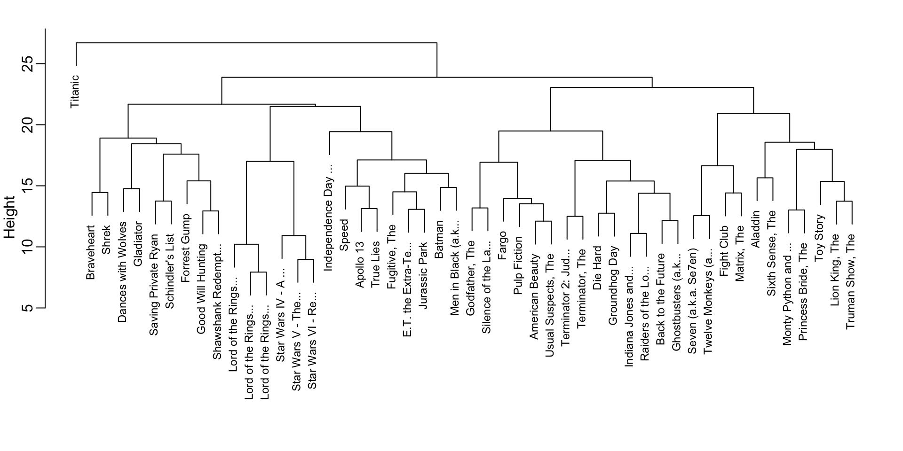
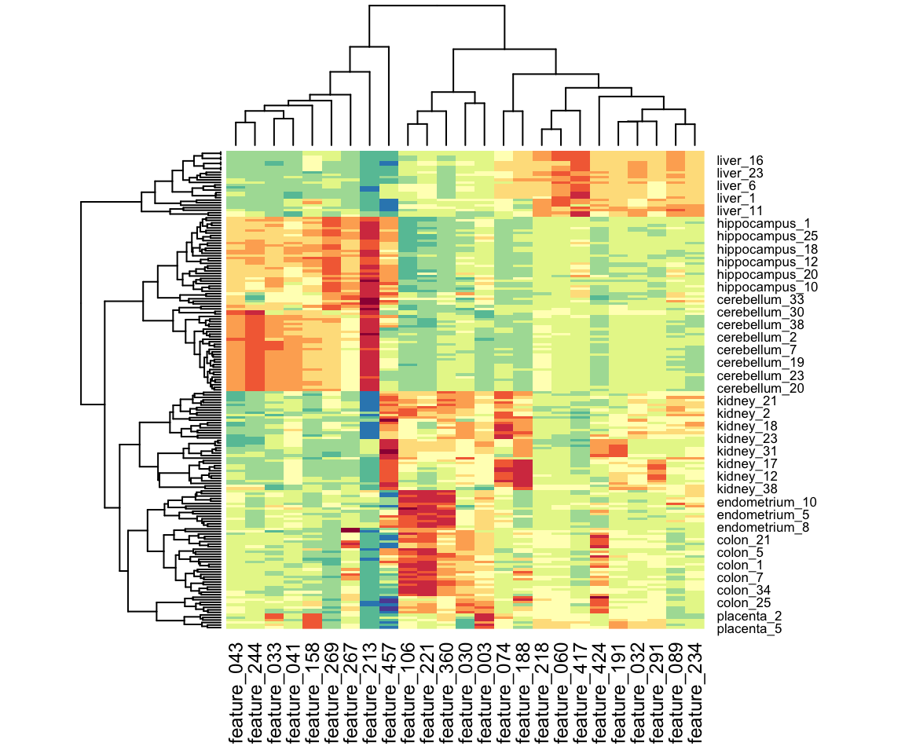

library(behdslabs)
library(data.table)
library(stringr)
dt <- as.data.table(movielens)
dt <- dt[, if (.N >= 100) .SD, by = userId]
top_movies <- dt[, .N, by = .(movieId, title)]
dt <- dt[movieId %in% top_movies[order(-N)][1:50, movieId]]
dt <- dcast(dt, title ~ userId, value.var = "rating")
movies <- as.matrix(dt[,-1])
rownames(movies) <- str_remove(dt$title, ": Episode") |> str_trunc(20)32 Unsupervised Learning: Clustering
The algorithms we have studied so far represent the most widely used branch of machine learning: supervised learning. In supervised learning, the training data include both predictors and outcomes, and the goal is to learn a function that can predict the outcome for new observations. Much of the mathematical and practical framework developed in previous chapters was aimed at understanding, evaluating, and building these supervised prediction models.
However, supervised learning is only one part of what is broadly referred to as machine learning. A second major branch is unsupervised learning, in which the outcomes (labels) are not provided. The goal is no longer prediction, but rather to uncover structure in the data: identify groups, detect patterns, or reveal lower-dimensional representations. This family of techniques is extremely important in practice and includes many methods not covered in this book. Here, we provide a brief introduction and refer readers to the recommended texts for deeper study.
Unsupervised learning encompasses a wide variety of approaches, but one of the most common is clustering: the task of grouping observations with similar features. Clustering can be challenging in settings like height-based sex prediction or the two-versus-seven digit example, because the groups naturally overlap. But in many scientific and applied domains, such as genomics, marketing, image analysis, and recommender systems, unsupervised methods can uncover meaningful patterns that would otherwise remain hidden.
In this chapter, we focus on two classic clustering algorithms, each illustrating a very different strategy:
- Hierarchical clustering, which groups observations based on recursively merging the closest pairs.
- k-means clustering, which partitions the data by iteratively refining cluster centers.
These two methods are foundational, as many advanced unsupervised learning techniques build on the same ideas.
32.1 Examples
To make the concepts concrete, we study two real examples. These examples illustrate how unsupervised learning can uncover latent structure in real data, even when no outcome labels are available.
Movie ratings
Our first example is based on movie ratings. Here we quickly construct a matrix movies that has ratings for the 50 movies with the most ratings among users with at least 100 ratings:
Notice that if we compute distances directly from the original ratings, movies with generally high ratings will tend to be close to each other, as will movies with generally low ratings. However, this is not what we are actually interested in. Instead, we want to capture how ratings correlate across users for the 263 of different users. To achieve this, we center the ratings for each movie by removing the movie effect:
movies <- movies - rowMeans(movies, na.rm = TRUE)As described in Chapter 24, many of the entries are missing because not every user rates every movie, so we use the argument na.rm = TRUE. With the centered data, we can now cluster movies based on their rating patterns.
Sensor activity features
Our second example uses the sensor_activity_features dataset from behdslabs. This dataset contains sensor-derived feature measurements for 189 recording sessions. The predictors, stored in the component x, form a matrix with 500 columns, one for each feature, so each row represents the feature profile of a single recording session. The outcome labels, saved in the component y, indicate which of seven activity contexts each session comes from.
Note: the row names of sensor_activity_features$x retain the original dataset’s tissue-based labels (e.g. cerebellum_1) even though the y outcome vector uses the new activity labels — a package-level inconsistency, since only the outcome column was relabeled and not the row names, flagged for a future behdslabs release.
Although clustering is typically applied when labels are unknown, this dataset is pedagogically useful because we do know the true activity contexts. This lets us examine how well the clusters we find reflect the underlying structure: different activities produce distinct patterns in the sensor stream, and different features play different roles in characterizing different activities, so these patterns should be detectable through clustering.
Before clustering, we create a centered version of the sensor-feature matrix by subtracting each feature’s mean level. This ensures we focus on relative differences rather than absolute magnitude:
genex <- with(sensor_activity_features, sweep(x, 2, colMeans(x)))When we later explore genex, even without giving the algorithm the activity labels, we should see structure emerge: samples from the same activity tend to cluster together because they share characteristic feature patterns.
32.2 Hierarchical clustering
The first clustering algorithm we describe is hierarchical clustering. As with many clustering algorithms, the first step is to compute distances between each pair of observations. We do this for the movies matrix as an example:
d <- dist(movies)The dist function automatically accounts for missing values and standardizes the distance measurements, ensuring that the computed distance between two movies does not depend on the number of ratings available.
With the distance between each pair of movies computed, we need an algorithm to define groups based on these distances. Hierarchical clustering starts by defining each observation as a separate group, then the two closest groups are joined into a new group. We then continue joining the closest groups into new groups iteratively until there is just one group including all the observations.
The hclust function implements this algorithm and takes a distance as input:
h <- hclust(d)We can see the resulting groups using a dendrogram. The function plot applied to an hclust object creates a dendrogram:
plot(h, cex = 0.75, main = "", xlab = "")
This graph gives us an approximation of the distance between any two movies. To find this distance, we find the first location, from top to bottom, where these movies split into two different groups. The height of this location is the distance between these two groups. So, for example, the distance between the three Star Wars movies is 8 or less, while the distance between Raiders of the Lost Ark and The Silence of the Lambs is about 17.
To generate actual groups, we can do one of two things: 1) decide on a minimum distance needed for observations to be in the same group, or 2) decide on the number of groups you want and then find the minimum distance that achieves this.
The function cutree can be applied to the output of hclust to perform either of these two operations and generate groups. The argument k can be used to provide the number of groups, and, alternatively, the argument h can be used to denote the minimum distance between members of a group. Here is how we ask for 10 groups to be formed:
groups <- cutree(h, k = 10)Note that the clustering provides some insights into types of movies. Group 2 appears to be critically acclaimed movies:
names(groups)[groups == 2]
#> [1] "American Beauty" "Fargo" "Godfather, The"
#> [4] "Pulp Fiction" "Silence of the La..." "Usual Suspects, The"And Group 9 appears to be nerd movies:
names(groups)[groups == 9]
#> [1] "Lord of the Rings..." "Lord of the Rings..." "Lord of the Rings..."
#> [4] "Star Wars IV - A ..." "Star Wars V - The..." "Star Wars VI - Re..."We can change the size of the group by either making k larger or h smaller.
32.3 Heatmaps
A powerful visual tool for revealing clusters or patterns in high-dimensional data is the heatmap. Heatmaps are especially useful when both the observations and the predictors can form meaningful groups. Sensor-feature datasets are a prime example: not only can recording sessions cluster by activity context, but features themselves often cluster into groups that covary.
The basic idea is straightforward: we create an image of the data matrix using color to represent each value, and we reorder both rows and columns according to the results of a clustering algorithm. This reordering places similar samples and similar features next to each other, making the structure in the data much easier to see.
We illustrate this approach below using the sensor_activity_features dataset from behdslabs.
h_1 <- hclust(dist(genex))
h_2 <- hclust(dist(t(genex)))Note that we have performed two clusterings: we clustered samples (h_1) and features (h_2).
Now we can use the results of this clustering to order the rows and columns:
image(genex[h_1$order, h_2$order])The heatmap function does all this for us:
heatmap(genex)Note, we do not show the results of the two lines of code above because there are too many features for the plot to be useful. We will therefore filter some columns and remake the plots.
If only a few features are different between clusters, including all the features can add enough noise to make cluster detection challenging. A simple approach to avoid this is to assume low-variability features are not informative and include only high-variability features. For example, in the movie example, users with low variance in their ratings do not really distinguish movies: all the movies seem about the same to them. Similarly, in the sensor-feature example, features that don’t vary across samples are less likely to be informative of activity-related patterns.
Here we show how to restrict the heatmap to only the most variable features, which often reveal the strongest patterns. We first compute the standard deviation for each feature, select the top 25 most variable features, and then plot a heatmap using a more suitable divergent color palette:
sds <- matrixStats::colSds(genex, na.rm = TRUE)
o <- order(sds, decreasing = TRUE)[1:25]
heatmap(genex[,o], col = rev(RColorBrewer::brewer.pal(11, "Spectral")))
We see clear patterns in the heatmap: observations cluster into groups that largely correspond to activity context, and features also form clusters, reflecting groups of sensor features that tend to covary within the same activity.
Note there are several other heatmap functions in R. Popular example are the heatmap.2 in the gplots package and Heatmap in the ComplexHeatmap package.
32.4 k-means
The second clustering algorithm we describe is k-means.
The k-means algorithm requires us to predefine \(k\), the number of clusters we want to create. Once \(k\) is set, the algorithm proceeds iteratively:
- Initialization: Define \(k\) centers (chosen at random).
- Assignment step: Each observation is assigned to the cluster with the closest center.
- Update step: The centers are redefined by taking the mean of the observations in each cluster. These new centers are called centroids.
- Iteration: Steps 2 and 3 are repeated until the centers stabilize (converge).
We can run k-means to see if it can discover the different activities:
set.seed(2001)
km <- kmeans(genex, centers = 7)The cluster assignments are stored in the cluster component:
km$cluster[1:5]
#> cerebellum_1 cerebellum_2 cerebellum_3 cerebellum_4 cerebellum_5
#> 7 7 7 7 7Because the initial centers are chosen at random (which is why we use set.seed), the resulting clusters can vary. To improve stability, we can repeat the process multiple times with different random starting points and keep the best result. The number of random starts is set with the nstart argument:
set.seed(2001)
km <- kmeans(genex, centers = 7, nstart = 100)Because we have true activity labels for this dataset, we can evaluate how well the clusters produced by k-means align with the known activity groups. The simplest approach is to examine a contingency table and assess how pure each cluster is, that is, whether most of its samples come from a single activity context:
table(km$cluster, sensor_activity_features$y)
#>
#> walking typing reading meditating gaming driving resting
#> 1 33 0 0 0 0 0 0
#> 2 0 34 0 0 1 0 0
#> 3 0 0 0 0 0 26 0
#> 4 0 0 15 0 0 0 0
#> 5 0 0 0 0 38 0 0
#> 6 5 0 0 31 0 0 0
#> 7 0 0 0 0 0 0 6The results show that k-means does a reasonably good job at recovering the activity structure. For example, clusters 1, 3, 4, 5, and 7 correspond largely to the walking, driving, reading, gaming, and resting contexts, respectively. All meditating samples fall into cluster 6, although five walking samples are incorrectly included there. Cluster 2 consists of almost all typing samples, with only one gaming sample misassigned.
In the next section, we discuss formal ways to summarize this agreement with a single number, such as purity and other commonly used clustering evaluation metrics.
32.5 Evaluating Clusters with Class Labels
In supervised learning, we evaluate performance with quantities such as accuracy, sensitivity, and RMSE. Clustering presents a different challenge: because the method is unsupervised, the algorithm never sees the true outcomes and has no explicit notion of “correct” labels. However, in many real data settings, we do have ground-truth labels available for evaluation purposes—for example, activity context in sensor-feature studies. In these situations, we can meaningfully ask: How well do the clusters recovered by the algorithm align with the known classes? This kind of external evaluation is common in benchmarking studies that compare clustering methods for a given scientific or applied context.
A convenient first step is to visualize cluster quality using a contingency table (or confusion matrix), as we did above with table. Here, rows represent clusters and columns represent true classes. After optionally reordering rows or columns to make the structure easier to interpret:
tab <- table(km$cluster, sensor_activity_features$y)
tab[,apply(tab, 1, which.max)]
#>
#> walking typing driving reading gaming meditating resting
#> 1 33 0 0 0 0 0 0
#> 2 0 34 0 0 1 0 0
#> 3 0 0 26 0 0 0 0
#> 4 0 0 0 15 0 0 0
#> 5 0 0 0 0 38 0 0
#> 6 5 0 0 0 0 31 0
#> 7 0 0 0 0 0 0 6a “pure” cluster appears as a row with one dominant entry and all remaining entries relatively small. This indicates that observations assigned to that cluster overwhelmingly share the same true label.
If we want to summarize this agreement with a single number, the most widely used measure is cluster purity.
Cluster purity
Suppose we have:
- true class labels \(Y_i \in {1,\dots,J}\) for each observation \(i=1\dots N\), and
- a clustering algorithm that assigns each observation \(i\) to one of \(K\) clusters \(C_1,\dots,C_K\).
For each cluster \(C_k\), we look at the distribution of true labels inside that cluster and find the most common label. The purity of cluster \(k\) is the proportion of observations in \(C_k\) that belong to this majority class. The overall purity is defined as:
\[ \text{Purity} = \frac{1}{N} \sum_{k=1}^K \max_j | C_k \cap L_j | \]
where \(L_j\) is the set of observations in class \(j\) and \(|C_k \cap L_j|\) is the number of observations in both \(C_k\) and \(L_j\).
Purity is easy to interpret: a purity of 1 means that every cluster consists of observations from just one class; a purity of 0.6 means that, on average, 60% of the points in each cluster come from its dominant class and 40% are “mixed in” from other classes.
We can compute the purity for our sensor-feature example and note that it is very close to 1:
tab <- table(km$cluster, sensor_activity_features$y)
sum(apply(tab, 1, max))/sum(tab)
#> [1] 0.968Other measures: ARI and NMI
Purity is simple and intuitive, but it does not correct for chance and can be biased toward having many small clusters. In more formal evaluations, especially in the machine learning literature, two other measures are common:
Adjusted Rand Index (ARI): compares the clustering to the true labels and adjusts for agreement that would occur by chance. It ranges from 0 (random assignment) to 1 (perfect match).
Normalized Mutual Information (NMI): uses ideas from information theory to measure how much knowing the cluster label reduces uncertainty about the true label. It also typically ranges between 0 and 1, with higher values indicating better alignment.
In practice, purity and the corresponding contingency table are often the first tools used to understand how clusters relate to known classes, with ARI and NMI providing more formal, chance-corrected summaries when needed.
32.6 Exercises
1. Compute the pairwise distance between users in the movies dataset using a standard distance (e.g., Euclidean). You will get an error because some user pairs have no movies rated in common, producing rows or columns with all NAs. To diagnose this, create a matrix in_common where entry \((i, j)\) is the number of movies that users \(i\) and \(j\) both rated. Hint: use is.na() together with crossprod().
2. Create a reduced version of the movies matrix containing only users who share at least one commonly rated movie with every other user in the subset. Center each user’s ratings by subtracting their mean, compute a distance matrix, and run hierarchical clustering (hclust). Inspect the resulting dendrogram: Do you observe any structure? Do any groups of users cluster together?
3. Use cutree with k = 7 or equivalently cutree with h = 14 to obtain 7 clusters. Create a table showing how many users fall into each of the 7 clusters.
4. For the largest and second-largest clusters, examine the users’ favorite movies (e.g., movies with the highest average ratings). Describe the types of movie watchers in each group. Do the clusters correspond to clear preference patterns (e.g., action fans, romance fans, etc.)?
5. Perform hierarchical clustering on the sensor-feature matrix genex and label the dendrogram leaves using the activity contexts. Two walking samples (row names cerebellum_29 and cerebellum_30 — the row names of x still carry the original tissue-based labels, see the note above) and two gaming samples (kidney_38 and kidney_39) cluster with driving. Verify this in your plot.
6. The results in exercise 5 differ from the k-means clustering obtained with:
set.seed(2001)
km <- kmeans(genex, centers = 7, nstart = 100)Examine the cluster centers in km$centers. Plot the feature profile of a walking sample (e.g., row name "cerebellum_29") against each of the seven centers to see which center it most resembles:
par(mfrow = c(4, 2))
for (i in 1:7) {
plot(km$centers[i,], genex["cerebellum_29",],
xlim = range(genex), ylim = range(genex))
}Repeat for "cerebellum_30", "kidney_38", "kidney_39", "liver_13", and "liver_14", and also compare these samples directly to one another. Use these comparisons to propose possible explanations for the mismatches observed in exercise 5.
7. Cluster a subset of MNIST digits into 10 clusters:
mnist <- read_mnist()
set.seed(1990)
index <- sample(nrow(mnist$train$images), 1000)
x <- mnist$train$images[index,]
y <- factor(mnist$train$labels[index])
km <- kmeans(x, centers = 10, nstart = 100)Compare cluster assignments to true labels using table(). Compute the cluster purity of the resulting clustering. How well does k-means do when asked to find 10 digit clusters?
8. Examine the cluster centers as images. For example, note that the center for the cluster most associated with “3” may be a mixture of “3” and “5”. Comment on what you observe.
9. Rerun k-means with 25 clusters to allow the algorithm to represent multiple handwriting styles for the same digit. Inspect both the contingency table, the cluster purity, and the cluster-center images. Comment on whether the results improve and what you learn about the variety of ways people write the digits.
10. As discussed in Section 32.5, purity generally increases with the number of clusters. Repeat exercise 9 for k in seq(10, 100, 10). Compute purity for each value of k and make a plot of purity versus the number of clusters. Comment on when increases in purity seem meaningful and when they appear to be due only to chance.